전자산업기사 (2019-04-27 기출문제)
1과목: 전자회로
1. 어떤 차동 증폭기의 차동모드 전압이득이 5000, 동상모드 전압이득이 0.25일 때, CMRR은 약 몇 dB인가?
- 46
- 62
- 78
- 86
(정답률: 83%)

2. 다음 회로의 이름으로 옳은 것은?
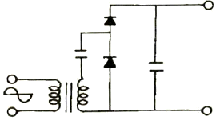
- 전파 정류회로
- 배전압 정류회로
- 진폭제한회로
- 위상반전회로
(정답률: 79%)
3. 반파정류기와 전파정류기의 다이오드 저항과 부하저항이 서로 같을 때 두 정류기의 전압 변동률의 관계는?
- 반파정류기가 전파정류기에 비해 2배 더 크다.
- 전파정류기가 반파정류기에 비해 2배 더 크다.
- 전파정류기가 반파정류기에 비해 4배 더 크다.
- 전파정류기와 반파정류기의 경우가 같다.
(정답률: 66%)
4. 다음에서 피변조파 V=Vcㆍ(1+mcosωt)ㆍsinωt이며, 반송파의 진폭은 4V, 변조도는 50%인 경우 직선 검파를 할 때 부하저항에 나타나는 신호파의 실효치 전압은 약 몇 V 인가?(단 , 효율 η는 90%이다.)
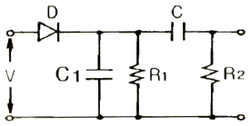
- 0.37
- 1.27
- 2.25
- 3.4
(정답률: 70%)
5. 증폭기의 대역폭 정의로 맞는 것은?
- 중간영역전압이득의 100%가 시작되는 주파수에서 끝나는 주파수 사이
- 중간영역전압이득의 약 90% 가 시작되는 주파수에서 끝나는 주파수 사이
- 중간영역전압이득의 약 70%가 시작되는 주파수에서 끝나는 주파수 사이
- 중간영역전압이득의 약 50%가 시작되는 주파수에서 끝나는 주파수 사이
(정답률: 74%)
6. 어떤 증폭기가 전압 이득(Av)이 50이고, 차단주파수(fc)가 20Hz일 때, 궤환 시 전압이득이 40이 되었다면, 변경된 차단주파수는 몇 Hz 인가?
- 8
- 16
- 20
- 25
(정답률: 55%)
7. 다음 회로에서 출력 Vo의 전압(V)은? (단, OPAMP는 이상적이다)
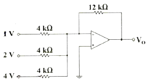
- －7
- －21
- 7
- 21
(정답률: 83%)
8. 다음 중 정현파를 입력하면 구형파가 출력되는 회로는?
- 적분 회로
- 미분 회로
- 부트스트랩 회로
- 슈미트 트리거 회로
(정답률: 89%)
9. 다음 중 FET의 특징으로 옳은 것은?
- Ai(전류이득) = ∞
- 입력 저항이 10 ~ 100Ω 정도로 작다.
- 전압 제어 방식이다
- 이득×대역폭이 바이폴라(Bipolar) 보다 크다.
(정답률: 75%)
10. 다음 트랜지스터(BJT)의 동작점 중 증폭기로 동작하기 위한 영역은?
- cutoff region
- saturation region
- active region
- breakdown region
(정답률: 70%)
11. 다음 원소 중 도너원자로 틀린 것은?
- In
- P
- As
- Sb
(정답률: 82%)
12. 다음 회로의 출력파형은 어느 것인가?
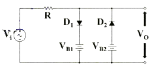
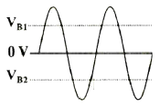
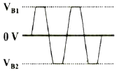
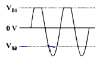
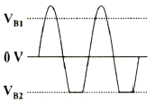
(정답률: 81%)
13. 다음 연산증폭기의 특성 중 슬루 레이트(slew rate)에 가장 영향을 많이 받는 특성은?
- 잡음 특성
- 이득 특성
- 스위칭 특성
- 동상 제거 특성
(정답률: 81%)
14. 다단(3단) 증폭기의 전체 전압 이득은 약 몇 dB인가? (단, 각단의 전압이득Av1=10, Av2=15, Av3=20 이다.)
- 45
- 70
- 90
- 100
(정답률: 65%)
15. 이상적인 펄스파형에서 펄스폭이 20μs이고, 펄스의 반복 주파수가 1000Hz일 때, 이 펄스파의 점유율 D는 얼마인가?
- 0.0⑤
- 0.002
- 0.⑤
- 0.02
(정답률: 67%)
16. 다음 정류회로에서 다이오드에 걸리는 피크역전압(PIV)은 몇 V인가? (단, 다이오드는 이상적인 소자이다.)
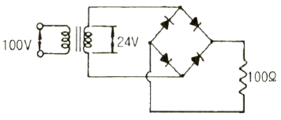
- 12
- 24
- 48
- 100
(정답률: 77%)
17. 다음 회로에서 궤환율 β는 얼마인가?
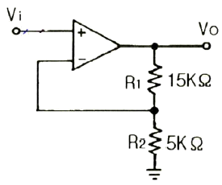
- 0.25
- 0.5
- 0.75
- 1
(정답률: 65%)
18. 다음 중 트랜지스터(BJT) 회로를 증폭기로 사용하기 위해 바이어스를 설계 시 가장 적절한 것은?
- 베이스-이미터 사이는 역방향, 컬렉터-베이스 사이도 역방향
- 베이스-이미터 사이는 역방향, 컬렉터-베이스 사이는 순방향
- 베이스-이미터 사이는 순방향, 컬렉터-베이스 사이도 순방향
- 베이스-이미터 사이는 순방향, 컬렉터-베이스 사이는 역방향
(정답률: 70%)
19. 전압 증폭도가 항상 1보다 작은 증폭회로는?
- 컬렉터 접지 증폭회로
- 이미터 접지 증폭회로
- 베이스 접지 증폭회로
- 게이트 접지 증폭회로
(정답률: 68%)
20. 다음 중 트랜지스터(BJT) 증폭기 구성에서 C급 증폭기의 가장 큰 장점은?
- 잡음의 감소
- 효율의 증대
- 회로 구성이 간단
- 출력 파형의 왜율 감소
(정답률: 68%)
2과목: 전기자기학 및 회로이론
21. 어떤 폐곡면 내에 +8μC의 전하와 －3μC의 전하가 있을 경우, 이 폐곡면에서 나오는 전기력선의 총 수는 약 몇 개 인가?
- 0.30×105
- 1.24×105
- 5.65×105
- 9.65×105
(정답률: 72%)
22. 자속의 연속성을 나타낸 식은?
- B = μH
- ∇ · B = 0
- ∇ · B = ρ
- ∇ · B = －μH
(정답률: 71%)
23. 자화곡선(B－H곡선)을 나타내는 Frolich의 식은?
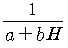
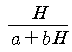
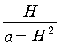
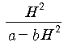
(정답률: 68%)
24. 거리에 반비례하는 전계의 세기를 가진 것은?
- 점전하
- 구전하
- 선전하
- 전기쌍극자
(정답률: 65%)
25. 유전체에서 분극의 세기 단위는?
- C/m3
- C/m2
- C/m
- C
(정답률: 76%)
26. 중공도체의 중공부에 전하를 놓지 않으면 외부에서 준 전하는 외부 표면에만 분포한다. 이때 도체 내의 전계는 몇 V/m인가?
- 0
- 4π
- ∞
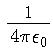
(정답률: 80%)
27. 반지름 a(m)인 전선을 지상 h(m) 높이의 지면에 나란하게 가설했을 때의 단위 길이당 자기유도계수 L(H/m)은? (단, 도선의 투자율은 μ(H/m)이다.)
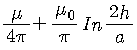
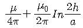
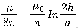
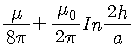
(정답률: 66%)
28. 전류에 의한 자계의 방향을 결정하는 법칙은?
- 렌츠의 법칙
- 플레밍의 왼손 법칙
- 플레밍의 오른손 법칙
- 암페어의 오른나사 법칙
(정답률: 76%)
29. 반지름 a(m)인 도체구에 전하 Q(C)이 있을 때, 이 도체구가 유전율 ε(F/m)인 유전체에 있다고 하면 이 도체구가 가진 에너지(J)는?
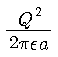
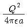
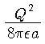
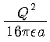
(정답률: 61%)
30. 평균반지름 10cm인 환상솔레노이드에 5A의 전류가 흐를 때 내부자계가 1600AT/m이었다. 권수는 약 몇 회인가?
- 210
- 200
- 190
- 180
(정답률: 58%)
31.
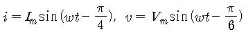
일 때, 전류와 전압과의 위상차는 얼마인가?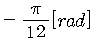
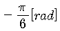
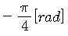
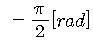
(정답률: 71%)
32. 다음 파형 중 파형률이 가장 작은 것은?
- 삼각파
- 정현파
- 구형파
- 반원파
(정답률: 75%)
33. 다음 파형의 실효치는 몇 V 인가?
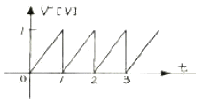
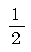
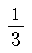
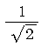
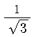
(정답률: 72%)
34. 복소평면(S평면)에서 근의 위치가 그림의 X표점에 있을 때 응답 파형은?
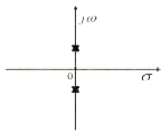
- 감쇠 진동한다
- 지속 진동한다
- 증가 진동한다
- 단조 증가한다
(정답률: 81%)
35. 다음 그림과 같은 RL 직렬회로에서 스위치가 연결되었을 때, 정상전류는 몇 A 인가?
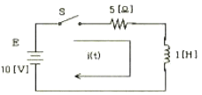
- 0.5
- 1
- 1.5
- 2
(정답률: 68%)
36. 다음 회로에서 등가 임피던스는?
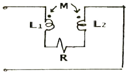
- jω(L1+L2-2M)
- jω(L1+L2+2M)
- jω(L1+L2+2M)+R
- jω(L1+L2-2M)+R
(정답률: 70%)
37. 라플라스 변환 H(s)에서 변수 s의 의미는?
- 복소 주파수
- 전달함수
- 영점
- 극점
(정답률: 63%)
38. 이상적인 무손실 선로에서 파동의 위상 속도(v)는? (단, L은 선로의 단위길이당 인덕턴스이고, C는 선로의 단위 길이당 정전용량이다.)
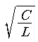
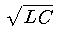
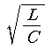
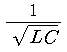
(정답률: 73%)
39. 어떤 회로의 전압
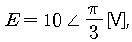
, 전류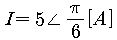
일 때 임피던스 Z는 몇 Ω인가?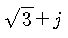
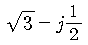
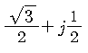
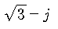
(정답률: 80%)
40. 그림과 같은 회로가 정저항 회로가 되기 위한 C 값은 몇 μF인가? (단, R=2kΩ, L=4H 이다.)
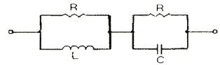
- 0.1
- 0.2
- 1
- 2
(정답률: 60%)
3과목: 전자계산기일반
41. CPU가 데이터를 받아들일 수 있음을 메모리에 알리는 신호를 송출하는 단계는?
- SYNC(Synchronization signal)
- INT(Interrupt request)
- INTE(Interrupt enable)
- DBIN(Data bus In)
(정답률: 68%)
42. 다음 회로에서 A=1001, B=0111이 입력되어 있을 때 출력은?(단, A와 B는 입력이고 f는 출력이다.)
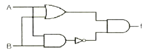
- 0111
- 1110
- 1001
- 0001
(정답률: 72%)
43. 주 기억장치에 주로 사용되는 기억 소자는? (문제 오류로 가답안 발표시 1번이 답안으로 발표되었으나, 확정답안 발표시 1번, 2번이 정답 처리 되었습니다. 여기서는 가답안인 1번을 누르면 정답 처리 됩니다.)
- RAM
- ROM
- 캐시 기억장치
- 자기 코어 기억장치
(정답률: 79%)
44. RS플립플롭의 특징이 아닌 것은?
- 입력으로 S(Set)와 R(Reset)이 있다.
- 양쪽 입력이 동시에 0이 될 수 있다.
- 펄스가 가해지면 반전되어 기억된다.
- 계산기의 레지스터, 제어회로 등에 사용된다.
(정답률: 61%)
45. 2진수 (1101)2 의 그레이 코드 변환 결과는?
- (0010)2
- (0011)2
- (1011)2
- (1111)2
(정답률: 80%)
46. 1 k×8비트 용량의 RAM을 구성하려고 할 때, 필요한 어드레스 선은 몇 개 인가?
- 8
- 10
- 12
- 14
(정답률: 69%)
47. 다음 C언어의 자료형 중 integer type이 아닌 것은?
- int
- long
- double
- short
(정답률: 79%)
48. 인터럽트 수행을 위해서 기본적으로 요구되는 요소가 아닌 것은?
- 큐
- 인터럽트 서브루틴
- 스택
- 인터럽트 요구신호
(정답률: 67%)
49. 어떤 컴퓨터의 번지레지스터(address register)가 16비트일 때 최대 번지지정 가능 용량은 몇 k인가?
- 256
- 64
- 32
- 16
(정답률: 63%)
50. 16진수 12E0을 10진수로 변환한 결과로 옳은 것은?
- 4832
- 4834
- 4836
- 4838
(정답률: 76%)
51. 다음 중 카운터를 설계하는데 가장 많이 사용하는 플립플롭은?
- RS 플립플롭
- D 플립플롭
- T 플립플롭
- E 플립플롭
(정답률: 83%)
52. JK플립플롭에서 J=0, K=1로 입력될 때 플립플롭은 어떻게 변하는가?
- 1로 변한다.
- 0으로 변한다.
- 전 내용이 그대로 남는다.
- 전 내용에 대한 complement로 된다.
(정답률: 75%)
53. 버퍼 메모리(buffer memory)의 목적으로 틀린 것은?
- 데이터를 미리 주기억장치에서 가져온다.
- 주기억장치의 용량을 크게 한다.
- 많은 데이터를 주기억장치에서 한 번에 가져나간다.
- 저속 입ㆍ출력장치와 고속 내부기억장치에 설치하여 사용된다.
(정답률: 62%)
54. 컴퓨터가 프로그램을 수행하던 중 컴퓨터 내부나 외부에서 응급 사태가 발생하여 현재 수행되는 프로그램이 일시적으로 중지되는 상태는?
- break
- stop
- emergency
- interrupt
(정답률: 71%)
55. 디코더(decoder)의 입력이 3개일 때 출력은 최대 몇 개인가?
- 1
- 2
- 4
- 8
(정답률: 84%)
56. 10진수 79를 8비트로 표현하여 1의 보수를 취한 후 우측으로 2비트 산술 시 프트 했을 때의 2진수 값은?
- 01001111
- 10110000
- 11011000
- 11101100
(정답률: 57%)
57. 2의 보수로 음수를 처리하는 시스템에서 가산기능과 보수기능만 있는 산술논리 연산 장치(ALU)를 이용하여 다음 식의 계산한 결과로 옳은 것은?
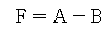
- F = A - B
- F = A – B + 1
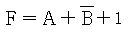
(정답률: 78%)
58. RISC(Reduced Instruction Set Computer) 시스템에 대한 설명으로 틀린 것은?
- 컴파일러 구성이 용이하다.
- 대부분의 명령어가 하나의 머신 사이클 내에 수행된다.
- 명령어의 길이는 가변적이다.
- 모든 식이 하나씩 차례차례 수행된다.
(정답률: 67%)
59. 음성 입력장치의 설명으로 틀린 것은?
- 단어와 숫자에 대한 음성 패턴들을 저장 할 데이터베이스를 가지고 있다.
- 소프트웨어가 감지 또는 판독된 해당 음성 패턴을 기계 내에 저장된 패턴과 비교한다.
- 인식장치로 구술한 단어의 패턴이 기록된다.
- 입력된 문자의 패턴을 저장된 패턴과 비교한다.
(정답률: 70%)
60. 오퍼랜드(operand)의 유형이 아닌 것은?
- 수치
- 신호
- 주소
- 문자
(정답률: 55%)
4과목: 전자계측
61. 다음 중 파형을 관측하여 주파수를 구하는데 가장 적합한 기기는 무엇인가?
- 전압계
- 전위차계
- 전류계
- 오실로스코프
(정답률: 87%)
62. 다음 그림의 블록선도는 헤테로다인 주파수 변환을 나타낸 구성도이다. a의 명칭은?
- 혼합기 및 저역필터
- 펄스발생기
- 비교기
- 위상 검출기
(정답률: 71%)
63. 2단 증폭회로에서 각단의 전압 증폭도를 각각 G1, G2, 잡음지수를 F1, F2라고 할 때 종합 잡음지수를 표시한 식은?
- F=F1+G1G2
- F=F1+F2
(정답률: 61%)
64. 다음 중 미세 측정을 위해 측정기의 정밀도나 정확도를 나타내는 이유로 가장 타당한 것은?
- 측정단위가 각각 다르기 때문
- 측정기의 사용방법이 다르기 때문
- 사람마다 읽는 방법이 다르기 때문
- 측정기마다 그 지시값이 조금씩 차이가 있기 때문
(정답률: 84%)
65. 다음 회로에서 검류계 전류가 0A일 때, 저항 값 X는 얼마인가? (단, P=1kΩ, Q=300Ω, R=2kΩ 이다.)
- 150Ω
- 300Ω
- 450Ω
- 600Ω
(정답률: 81%)
66. 다음은 윈 브리지(Wien Bridge)의 호로도이다. 브리지가 평형이 될 때 전원의 주파수 f는 몇 Hz인가?(단, T는 수화기 이고, R1=R2=R, C1=C2=C라 한다.)
(정답률: 66%)
67. 임의의 어떤 교류 증폭기의 주파수 대역을 오실로스코프와 조합해서 측정하고자 한다. 어떤형의 발생기를 사용해야 하는가?
- 소인 신호 바생기(Sweep Generator)
- AM신호 발생기(AM Signal Generator)
- FM신호 발생기(FM Signal Generator)
- Pulse 신호 발생기(Pulse Generator)
(정답률: 78%)
68. 싱크로스코프(Synchroscope)의 시간 축을 5us/cm로 설정하고 어떤 정현파의 1주기 폭을 측정하였을 때, 2cm 정현파의 주파수 값은 얼마인가?
- 50kHz
- 100kHz
- 150kHz
- 200kHz
(정답률: 78%)
69. 다음 중 교류 브리지 회로의 구성요소로서 알맞게 연결된 것은?
- 검류계 – 무유도 저항기 – 표준 유도기 – 표준 콘덴서 – 수화기
- 발진기 – 회로 시험기 – 무유도 저항기 – 표준 유도기 – 표준 콘덴서
- 발진기 – 수화기 – 무유도 저항기 – 표준 유도기 – 표준 콘덴서
- 회로 시험기 – 무유도 저항기 – 검류계 – 표준 유도기 – 표준 콘덴서
(정답률: 73%)
70. 슈미트 트리거(schmitt trigger) 회로의 용도로 가장 적절한 것은?
- 구형파를 정현파로 변화
- 구형파를 삼각파로 변화
- 정현파를 구형파로 변화
- 정편하를 삼각파로 변화
(정답률: 79%)
71. 표준신호 발생기의 AC신호 출력 시 구비조건 중 틀린 것은?
- 주파수의 가변 범위가 넓을 것
- 출력 전압이 일정할 것
- 출력 임피던스가 일정할 것
- 변조도의 조절이 자유로울 것
(정답률: 49%)
72. 다음 회로의 출력전압 VO 는 몇 V인가? (단, V1=8V , V2=0V , V3=0V , V4=8V)
- 9
- 7
- -7
- -9
(정답률: 74%)
73. 가동코일형의 지시계기에 있어서 코일이 받는 회전 토크(Torque)에 대한 설명으로 옳은 것은?
- 코일에 흐르는 전류량의 제곱에 비례한다.
- 코일에 흐르는 전류량에 비례한다.
- 코일의 권선수의 제곱에 비례한다.
- 지수적으로 비례한다.
(정답률: 59%)
74. 교류 100Vrms전압을 오실로스코프로 측정했을 때 이 교류의 첨두치(peak to peak) 전압은 약 몇 V 인가?
- 100
- 141
- 200
- 282
(정답률: 63%)
75. 오실로스코프에서 동기화 조건으로 가장 알맞은 것은?
- 수직편향신호와 수평편향신호의 주기가 같거나 정수배가 되어야 한다.
- 수직편향신호의 주기가 수평편향신호의 주기보다 항상 커야 한다.
- 수직편향신호의 주기가 수평편향신호의 주기보다 항상 작아야 한다.
- 주기는 상관없고 신호세기가 같아야 동기화가 이루어진다.
(정답률: 68%)
76. A-D변환기의 분류 방식 중 계수 방식에 해당되는 것은 무엇인가?
- 전압-시간 변환형
- 추종 비교형
- 수차 비교형
- 주기-시간 변환형
(정답률: 72%)
77. 주파수의 영향을 받지 않는 계기는?
- 유도형
- 열전대형
- 가동철편형
- 전류력계형
(정답률: 70%)
78. 다음 중 10-Ω ~ 1Ω의 아주 작은 저항을 측정할 때 사용하는 것으로 가장 적절한 것은?
- 윈브리지
- 휘스톤브리지
- 맥스웰브리지
- 켈빈더블브리지
(정답률: 74%)
79. 펄스폭 10s, 반복주파수 500Hz인 펄스를 열량계로 측정한 결과 평균 전력이 5W였다면 이 펄스의 첨두전력은 얼마인가?
- 1kW
- 2kW
- 3kW
- 4kW
(정답률: 70%)
80. 분류기를 사용하여 전류를 측정하는 경우 전류계의 내부저항이 0.2Ω, 분류기 저항이 1Ω이면 그 배율은 얼마인가?
- 1
- 3.2
- 2.2
- 1.2
(정답률: 69%)
CMRR = 20log(차동모드 전압이득/동상모드 전압이득)
= 20log(5000/0.25)
= 20log(20000)
= 86 dB
따라서, 정답은 "86"이다.